今回は封神演義を用いてオントロジーの紹介をします。使ったのは『封神演義』の中国語の原文、全100回・604,518字。明代の小説で、著作権が切れているので無料で全文が手に入りました。なぜ『封神演義』かというと、中国のコンテンツが好きなのですが、中国のコンテンツを見ているとたまに『封神演義』が一般常識として扱われていて、説明抜きで「みんなご存じのアレ!」という感じで封神演義のキャラクターやら地名、武器などが出てきます。以前キャッチアップするために日本語版の封神演義を購入し、読もうとしたのですが、登場人物の名前を覚えられずに途中でやめました。今回、オントロジーによって、『封神演義』の登場人物同士や勢力の関係性を表現し、読む助けになるかを検証しました。
たとえば料理のレシピをたくさん LLM に読ませると、こういうものが出てきます。
クラス 料理 > カレーインスタンス ビーフカレー関係 ビーフカレー --材料--> 牛肉ビーフカレー --材料--> 玉ねぎ属性 ビーフカレー.調理時間 = 40分同義語 玉ねぎ = タマネギ = 玉葱
これがオントロジーです。ある分野に出てくる語と、語どうしのつながりを、機械が読める形で書き並べたものです。
「ビーフカレーの材料は牛肉と玉ねぎ」というのは、人間にとっては読めば分かる話です。ただ、それが文章のなかに書かれている限り、機械は「牛肉を使うレシピを全部出して」という問いにすぐには答えられません。機械が答えられるように、文章から語と関係を取り出して整理する作業が、オントロジーの作成にあたります。
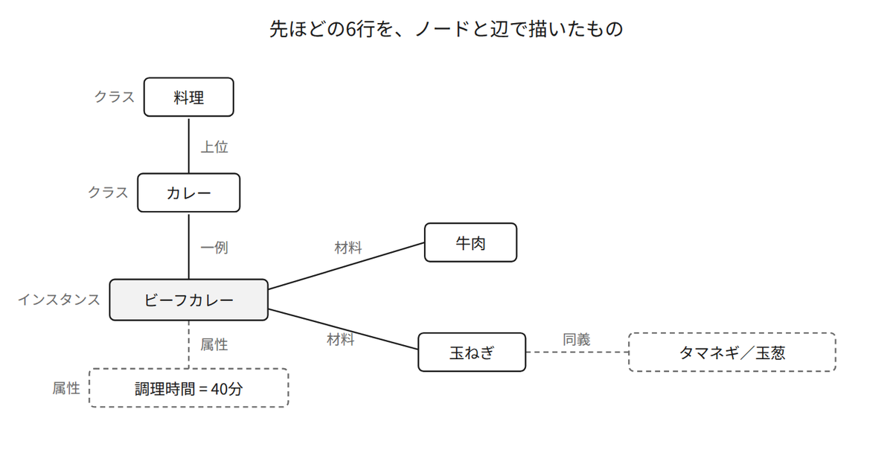
図1 先ほどの6行を、ノードと辺で描いたもの
先ほどの6行には、4種類の構成要素が入っています。
クラスは、「料理」「カレー」のような、ものの種類です。カレーは料理の一種なので、クラスどうしには上下関係がつきます。
インスタンスは、「ビーフカレー」のような具体的な1つです。クラスが「種類」で、インスタンスが「その種類に属する実物」という関係になります。
関係は、「ビーフカレーの材料は牛肉である」のように、2つのものを結ぶ線です。線には「材料」という名前が付きます。この名前のことを述語と呼びます。
属性は、「調理時間は40分」のように、1つのものが持つ値です。関係が「もの と もの」を結ぶのに対して、属性は「もの と 値」を結びます。
そして、この4つと並んでもうひとつ、同義語があります。
同義語 玉ねぎ = タマネギ = 玉葱
日本語では、同じものが漢字・ひらがな・カタカナで3通りに書けます。人間は「玉ねぎ」と「タマネギ」が同じものだと分かりますが、機械にとっては単に別の文字列です。この3つが同じものだと登録されていないと、レシピを集めた集計で、玉ねぎは3種類の別々の材料として数えられます。
1つめは、表記が違うだけの同じものを、機械が扱えるようになることです。レシピを1万件集めて「よく使われる材料」を数えるとき、集計プログラムが玉ねぎ・タマネギ・玉葱を別々に数えてしまえば、結果は実態と合いません。検索でも同じことが起きます。「玉ねぎ」で検索した人の画面に、「タマネギ」と書かれたレシピが出てきません。
2つめは、1つの文書には書かれていない条件でも、機械が答えを出せるようになることです。たとえば「卵を使わず、30分以内で作れる料理」を探したいとします。この条件に、全文検索は答えられません。卵を使わないレシピに「卵不使用」と書いてあるとは限らないからです。全文検索は、書かれていないことを探せません。材料と調理時間を機械が読める形にしておけば、機械は「材料に卵を含まない」「調理時間が30分以下」という条件で絞り込めます。
文書からオントロジーを作る手法はいくつもありますが、オントロジーをどう構築するかの選択肢は2つあります。1つめは、どんなクラスがあるかを先に人間が決めておくかどうか。2つめは、そのクラスの名前をどこで決めるかです。今回はどちらも、LLMに決めさせる側を選びました。
「この文書からは、人物・組織・場所の3種類を抜き出してください」と先に指定してから抽出させるやり方があります。この指定のことをスキーマと呼びます。スキーマを与えると、抽出結果は必ずその3種類のどれかに収まります。逆に言えば、スキーマに無いものは出てきません。
公開されている実装は、スキーマをどこまで要求するかで3つに分かれます。★とライセンスは2026年9月20日に GitHub API で取得した実測値です。
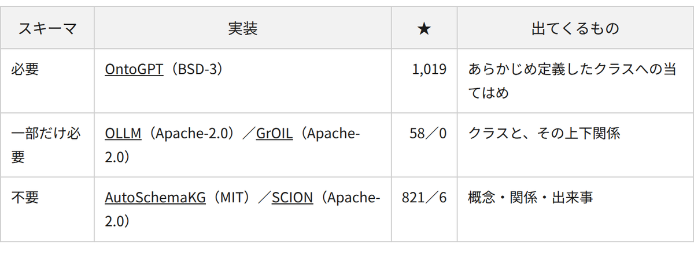
今回はスキーマ不要の側を選びました。この検証で答えたい問いが「事前にスキーマを決めずに、どこまで機械が見つけられるか」だからです。人物・組織・場所という3種類をこちらから渡した時点で、その問いには答えられなくなります。
概念を抽出させると、モデルは概念の名前だけでなく、その概念がどのクラスに属するかも一緒に返してきます。カレーの例でいえば、ビーフカレーに対して「料理」を返す部分です。この返ってくる語のことを、以降では型と呼びます。
作業を始める前、筆者は「人物・勢力・出身・宝貝（パオペイ）あたりの型を先に決めればよい」と考えていました。
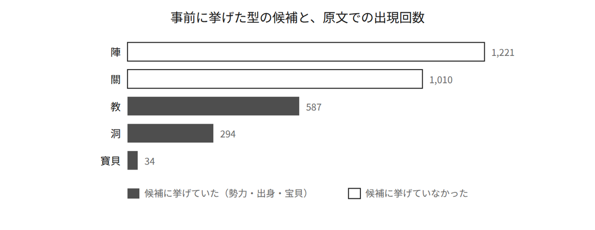
図2 事前に挙げた型の候補と、原文での出現回数
しかし、日本語訳で覚えていた「宝貝」という語は、原文では34回しか使われていません。この小説では宝貝が打神鞭・杏黃旗・番天印のように個別の名前で呼ばれるので、「宝貝」という語でまとめられる場面が少ないためです。一方、筆者が候補に入れていなかった 陣 と 關 は、2桁多く出てきます。陣は十絕陣・萬仙陣のような術の名前で、關は臨潼關から潼關までの五關、つまり西岐（せいき）から朝歌（ちょうか）への道のりそのものです。
つまり、型を事前に決めると、原文の分布と合わないものを押し付けることになります。そこで筆者は、抽出させるときのスキーマには型のフィールドだけを置き、値は自由な文字列で書かせました。何種類の型が出てくるか自体が、この検証の結果になります。
入力にしたのは『封神演義』の中国語の原文です。2つの公開元から全文が取れました。
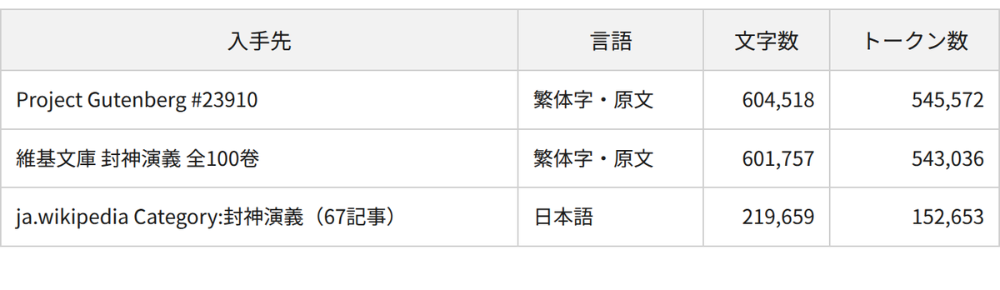
Project Gutenberg 版と維基文庫版は、別々に電子化されたテキストです。それにもかかわらず、規模の差が0.5%しかありません。どちらも百回本を底本にしているものと思われます。入力には Project Gutenberg 版を使いました。
日本語の全文は、手に入りませんでした。Kindleで買った電子版は持っていますが、使用するのは自重します。
また、封神演義原文版は、全100回で1回あたりのトークン数は最小3,212、平均5,510、最大14,203と、LLMに一度に渡す文脈としても手頃な長さでした。「どこで切るか」を考えずに、1回ごとそのままモデルへ渡せました。
理由は4つあります。
1つめは、無料で全文が手に入るのが中国語の原文だけだったこと。
2つめは、同じ話を読ませるのに要るトークン数が、中国語のほうが少ないことです。
3つめは、人物名がすべて漢字なので、日本語訳にしても見た目がほとんど変わらないことです。しかも読み方の分からない名前がほとんどなので、原文のままにしても、読者が受ける印象は変わりません。
4つめは、述語だけ日本語にすれば読めそうだということです。
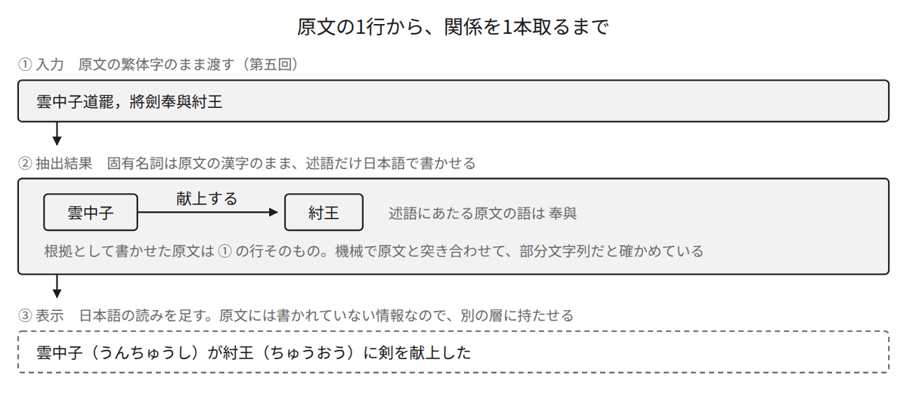
図3 原文の1行から、関係を1本取るまで
変わるのは述語だけです。奉與 を 献上する と書かせておけば、あとは読みを足すだけで日本語の文になります。
入力は原文の漢字のままにして、日本語の読みや通称は別の層に持たせました。どこから来た情報なのかで4つに分けています。
canonical 原文の漢字 例: 姜尚aliases_from_text 原文に書かれている別名。根拠の原文が必須 例: 子牙（字）飛熊（號）display_ja 日本語の読み仮名。原文には無い 例: きょう しがaliases_external ja.wikipedia のリダイレクト由来 例: 太公望
display_ja と aliases_external は、原文に根拠がありません。この区別を持たせておかないと、あとで「原文だけで答えられるか」を測れなくなります。
この記事で漢字のうしろに丸括弧で足している読みも、同じ display_ja の層にあたります。原文には1つも書かれていません。読みは名簿219人ぶんを ja.wikipedia から取ったもので、名簿に載っていない人物は筆者が字音で補いました。
困ったことは大きく3つありました。
1つめは、有名すぎて、モデルが学習の時点で本文を読んでいることです。何も見せずに問題を解かせても、120問中79問に正解します。原文に根拠のない関係が抽出結果に混ざっても、筆者が読んで気づくことは難しくなります。
2つめは、版がいくつもあることです。漫画・ドラマ・アニメがあり、日本語訳も翻案になっています。設定が少しずつ違うので、評価用の正解を作るときには、どの版の話なのかを毎回確かめる必要があります。
3つめは、原文が中国語なので、抽出結果を見ても筆者には正解かどうかの判断がつかないことです。そのため、評価の仕組みのほうを工夫するしかありませんでした。
私はただでさえ登場人物の名前を覚えるのが苦手なうえに、この小説では、同じ人物が回ごとに違う呼び名で出てきます。
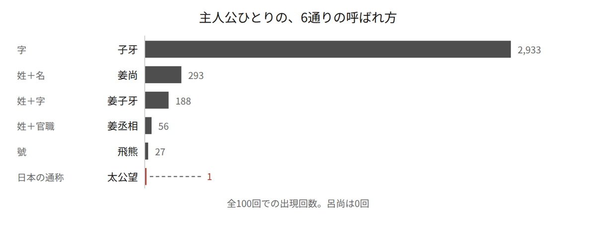
図4 主人公の6通りの呼ばれ方と、それぞれの出現回数
日本人読者がいちばん知っていそうな呼び名、「太公望（たいこうぼう）」は、全100回で1回しか出てきません。出てくるのは第二十九回、文王の葬儀の場面だけです。
読者が覚えている名前で本文を引いても、ほとんど当たりません。逆に、本文でいちばん多く出てくる「子牙（しが）」だけを覚えても、この人物が姜尚（きょうしょう）であり太公望であることは、名乗りの場面を読み落とすと分かりません。同じことが他の人物でも起きます。聞仲（ぶんちゅう）は、官職名の「聞太師（ぶんたいし）」が391回に対して、本名の「聞仲」は31回しかありません。
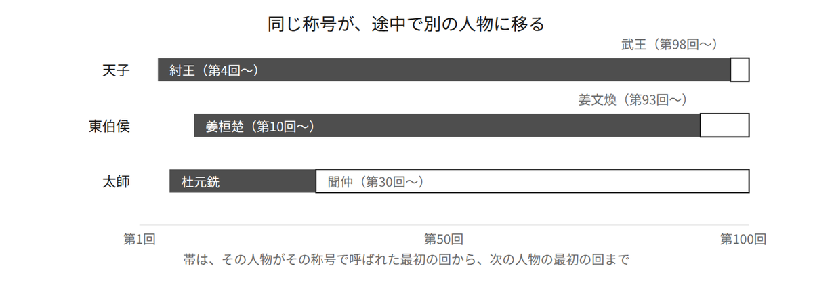
図5 3つの称号が、途中で別の人物に移る様子
東伯侯（とうはくこう）は、姜桓楚（きょうかんそ）が紂王（ちゅうおう）に殺されたあと、その子の姜文煥（きょうぶんかん）が名乗ります。天子（てんし）は、王朝が代わるところで紂王から武王（ぶおう）へ移ります。太師は官職なので、先代が死ねば次の人物が就きます。「東伯侯」を1人の別名として登録すると、父と子が1人の人物になります。「天子」を別名として登録すると、敵と味方が1人の人物になります。
さらに、称号は受け継がれるだけでなく、同じ時期に何人もが同じ称号で呼ばれます。抽出した結果を数えると、次のようになりました。
道人 9人 將軍 6人 殿下 5人 元帥 5人老師 9人 老爺 6人 君侯 5人 丞相 3人
「道人」で呼ばれる9人は、雲中子・燃燈道人・上清道人・玉清道人・太清道人・準提道人などです。この9人を「道人」という呼び名でまとめてしまうと、敵対する3つの勢力の区別がつかなくなります。
つまり、「同じ名前だから同じ人物」も「違う名前だから違う人物」も成り立ちません。名前を覚えられないのは筆者の記憶力の問題ではありません。全員の事績を覚えていても、同じ称号が同じ時期に何人もの人物を指し、回によって指す相手が変わる以上、誰の話なのかは決まらないからです。
ここまでの3つの問題から、作るものを決めました。
第何回まで読んだかを指定できるようにするのは、先の展開を読んでしまうと、読む楽しみが消えるからです。抽出したすべての概念と関係に回番号を持たせておけば、この絞り込みは単純なフィルタで済みます。
1回を1リクエストにして、全100回から概念・関係・属性・別名を抽出しました。原文には筋を要約する詩が挟まるので、ブロックを 地の文・詩・名簿 の3つに分けてから抽出しています。
100 回 / 744 秒 打ち切られた応答 0 / エラー 0概念 4,048 件 根拠の原文と一致 3,978 (98.3%)関係 2,687 件 根拠の原文と一致 2,638 (98.2%)属性 1,600 件 根拠の原文と一致 1,580 (98.8%)別名 1,040 件 根拠の原文と一致 990 (95.2%)
合計9,375項目のうち、9,186項目（98.0%）が原文の一部として照合できました。
抽出させた要素には、根拠になった原文をそのまま書き写させています。LLMがすでに封神演義を知っているため、ズルをするのを防ぐためです。例えば、以下のようにLLMはズルをしました。
抽出した概念 女媧書かせた根拠 女媧乃上古神女，生有聖德原文 女媧娘娘乃上古神女，生有聖德
原文にある「娘娘」の2文字が、根拠から抜けています。モデルは原文をそのままコピーせず、学習で覚えている表現に書き換えました。有名な作品ほど、モデルは本文を学習で覚えているので、書き写しよりも覚えている表現が優先されやすくなります。ただし、この書き換えは原文と照合すれば検出できます。
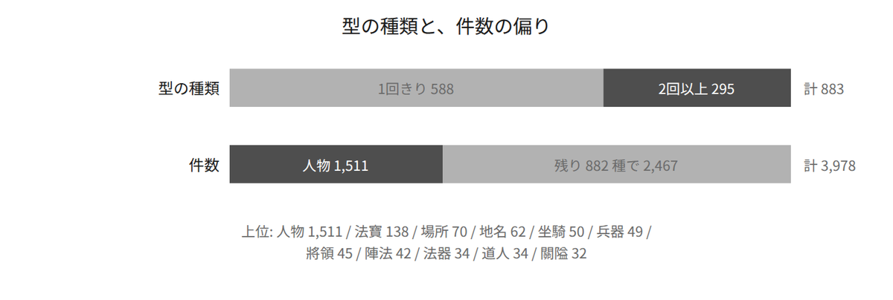
図6 型の種類と、件数の偏り
図2で挙げた型の候補と突き合わせると、3つのことが言えます。
1つめは、「寶貝」という型が1件も出なかったことです。代わりに 法寶 が138件、法器 が34件立っています。原文で 寶貝 が34回しか出てこないことと合っています。筆者が「宝貝」という語でまとめようとしていたものを、モデルは原文で使われている語のほうでまとめました。
2つめは、候補から漏れていた 陣法 と 關隘 が、型として出てきたことです。事前にスキーマを渡していたら、この2つは抽出結果に出てきません。
3つめは、簡体字が混ざることです。法寶 138件に対して 法宝 が25件、陣法 42件に対して 阵法 が3件あります。宝 が63字、体 が21字、军 が11字混入しました。同じ概念が字体で分かれているので、次の工程でまとめる対象になります。
固有名詞は原文の漢字のまま、述語だけ日本語で書くように指示しました。返ってきた述語は、2,638件に対して1,433種です。語彙が豊富ですね。以下はその中でも頻出だった述語です。
49 率いる 30 捕らえる 19 殺す 15 破る49 命じる 23 攻撃する 18 師事する 15 殺害する41 使用 22 使用する 18 所属する 13 殺死35 率領 20 命令 17 攻擊 12 擊殺
仮名を1文字でも含む述語は1,410件（53.4%）で、残りの1,228件（46.6%）は漢字だけです。使用 命令 治療 のように日本語としても読めるものが混ざるので、46.6%がそのまま指示違反ではありません。ただし 率領 攻擊 擒獲 殺死 擊殺 は、原文の語がそのまま入っています。
殺す 殺害する 殺死 擊殺 が、別々の述語として立っています。述語を自由に書かせたので、同じ関係が何通りにも分かれました。述語が分かれていると、同じ関係としてまとめられません。そのため「誰が誰を殺したか」を画面に出すときに、どれを死の関係として扱えばよいかが決まりません。日本語版でも登場人物が死亡したと思われる際には、「封神榜（ほうしんぼう）に魂魄が飛んだ」とか「岐山に魂が飛んだ」などのような表現で書かれており、オントロジーで機械的に分類するのを難しくしています。
原文でも同じ書き方をしていて、魂の行き先は名簿の封神榜ではなく、岐山（きさん）に建てた封神臺（ほうしんだい）です。一魂已入封神臺去了 一道靈魂往封神臺去了 のような書き方が、25の回に散らばって56箇所あります。人が死ぬ場面で、この形で書かれている例が多数登場します。
方弼 -[魂が赴く]-> 封神臺 第46回 ← この述語がほかに5件王變 -[进入]-> 封神臺 第49回殷洪 -[靈魂進入]-> 封神臺 第61回羅宣 -[奔往]-> 封神臺 第65回余元 -[進入]-> 封神臺 第75回張奎 -[赴く]-> 封神臺 第88回紂王 -[入る]-> 封神臺 第97回
ただし、「封神臺へ行った＝死んだ」を機械的に当てると、そのあと生き返る人物まで死亡になってしまい、不都合が出る場面もあるらしいです。
死と戦いにあたる述語は453件あって、そこに376種類の書き方が入っていました。死亡そのものの情報は、属性として21件しか取れていません。第九十九回だけで、神に封じられる人物が「諱（いみな）」つきで339箇所に並びます。つまり封じられる登場人物が339人もいるので、属性21件では画面に死を出せません。
そこで、表示のためだけに型を閉じた抽出を、別の実験として回しました。プロンプトで条件として指定したのは2点です。
敗走 敗下陣 は死んでいない、死 歸泉 陣亡 自刎 は死んでいる死亡 にして、行為者を空にすること。推測で 殺害 にしないこと出来事 784 件 根拠の原文と一致 763 (97.3%)戦闘勝利 313 / 殺害 246 / 死亡 121 / 捕縛 83
さきほどの封神臺の場面も、こちらでは27件が 殺害 死亡 として取れています。ただし根拠にしているのは魂の行き先ではなく、同じ文に書かれている殺し方です。子牙祭起打神鞭打將下來…只打得腦漿迸流 のほうを読んで、行為者を 子牙、相手を 高明 にしています。魂の行き先は、型を与えても死の手がかりにはなっていません。同じ文に殺し方が書かれていない場面では、取れていません。
他に大変だったのが、誰と誰が同一人物であるかの把握です。
原文が明示している別名は、役割つきで取れています。
ch015 姜尚 ← 子牙（字） 姓姜，名尚，字子牙，別號飛熊ch015 姜尚 ← 飛熊（別號） 姓姜，名尚，字子牙，別號飛熊
ただし、役割まで付いたのは990件中30件です。原文が明示していない箇所では、役割が空のまま「この2つは同じ人物を指す」という対だけが出てきます。この対をグラフの辺とみなして、繋がっているものを1つの人物にまとめるのが、素朴なやり方です。
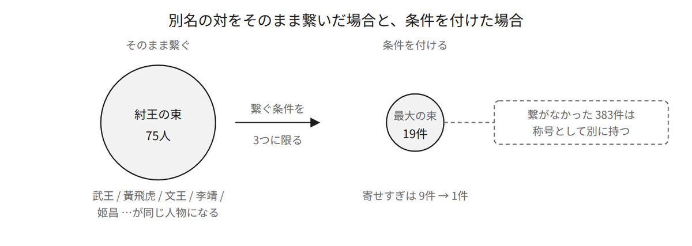
図7 別名の対をそのまま繋いだ場合と、条件を付けた場合
どこで繋がってしまったのかを数えると、図5で挙げた、途中で別の人物に移る称号がそのまま出てきました。
天子 ×9 武王 と 紂王 の両方に付く陛下 ×9 武王 と 紂王東伯侯 ×4 姜文煥 と 姜桓楚太師 ×9 杜元銑 と 聞仲
一方で、武成王（ぶせいおう）のように最後まで1人しか指さない称号もあります。この称号は黃飛虎（こうひこ）の呼び名として実際に使われていて、別人を巻き込む恐れがないので、繋いで構いません。
繋ぐ条件を、次のどれかに当てはまる場合だけにしました。
字 道號 別號 と明示している条件を3つに絞っても、崑崙（こんろん）十二大師の一人である太乙真人（たいいつしんじん）と、同じく十二大師の一人である黃龍真人（こうりゅうしんじん）が1人の人物にまとまってしまいました。真人 という共通部分だけで、この2人を繋いでしまうためです。同じことが 道人 と 天尊 でも起きます。
そこで、複数の名前の末尾になっている表記は、名前ではなく称号の部品として扱うことにしました。子牙 の末尾になっているのは 姜子牙（きょうしが） だけなので、子牙 は名前として残ります。まとめすぎは9件から1件に減りました。
3つめの条件にも、取りこぼしがありました。姜元帥 は 姜尚 子牙 姜子牙 の3つの表記に付くので、「1人しか指さない表記」という条件で弾かれます。ところが、この3つの表記はまとめたあとでは1人です。まとまりの中身が変わらなくなるまで判定をやり直すようにしたところ、姜尚のまとまりが19件から21件になり、姜丞相 と 姜元帥 が正しく入りました。
別名の対 941 件 名前として繋いだ 558 / 称号として繋がなかった 383まとまり 143 個 ＋ 別名が取れず1人だけのもの 105 人 = 248名簿219人のうち、表記が1度でも抽出に出た人物: 202 人 (92.2%)まとめすぎ（別人が同じまとまりに入った）: 1 件
正解として使った名簿は、ja.wikipedia の「封神演義の登場人物一覧」から作った219人です。この名簿は外部から持ってきたものなので、答え合わせにだけ使い、抽出の入力には渡していません。
抽出結果と原文を突き合わせるには、新字体と簡体字を原文の字体に戻す必要があります。
宝 ×63 称 ×49 将 ×38 号 ×21 体 ×21 団 ×17 関 ×15 ← 新字体军 ×11 关 ×8 术 ×7 阵 ×7 队 ×6 骑 ×5 职 ×5 ← 簡体字
名簿の側は新字体で書かれているので、黄→黃 姫→姬 発→發 も要ります。対応先がすべて原文に実在することを検査してから使い、対応表は83字になりました。
一致率が低かったとき、疑ったのは外部の名簿ではなく正規化のほうでした。疑う先を間違えていたら、名簿のほうを作り直していたはずです。
やっかいなことに、称号だけで呼ばれる人がいます。さらに、回によって同じ称号が別の人物を指すこともあります。そのため、「この称号は誰を指すか」の表として持たせました。
天子 紂王(第4回〜) / 武王(第98回〜)陛下 紂王(第4回〜) / 武王(第98回〜)太師 杜元銑(第6回〜) / 聞仲(第30回〜)大王 文王(第22回〜) / 黃飛虎(第31回〜) / 武王(第54回〜)丞相 商容(第2回〜) / 比干(第16回〜) / 姜尚(第28回〜)元帥 鄧九公(第54回〜) / 姜尚(第68回〜) / 孔宣(第68回〜) / 丘引(第73回〜) / 袁洪(第88回〜)
ここまでで、抽出した関係が2,638件あります。人手で全部を確かめることはできないのと、やはり私にはお手上げなので、判定をLLMにやらせることにしました。
評価には問題があります。判定役のモデルも『封神演義』を知っています。「この関係は正しいか」と聞けば、抽出できなかった情報ですら、「知識として正しい」と言って通してしまいます。
そこで、聞き方を「正しいか」ではなく「この原文に書いてあるか」にしました。そのうえで、原文に根拠が無いと分かっている主張、つまり間違っている知識を人工的に作って混ぜました。正解が「不支持」だと初めから分かっている主張で、以後これを負例と呼びます。抽出結果に手を加えていないほうは「抽出したままの主張」と呼びます。負例の作り方は以下のようなパターンがあります。
一部を抜き出して判定させたところ、関係の21.3%しか支持されませんでした。
[関係] 哪吒 -[殺害する]-> 高蘭英根拠: 被哪吒一乾坤圈，打中頂上，翻下馬來，又是一鎗，死於非命判定理由: 対象として「高蘭英」は登場しない。
原因は抽出ではなく、測り方にありました。2つあります。
1つめは、中国語の小説が主語を省くことです。高蘭英（こうらんえい）は直前の文にいます。抽出させた根拠は短い引用なので、関係として正しくても「相手が引用に出てこない」という理由で不支持になります。
2つめは、判定役への指示が悪かったことです。戦闘勝利 の定義に「相手は死んでいない」と書いたため、判定役は「死んでいないとは書かれていない」という理由で不支持にしていました。
根拠の原文を含む段落まで渡すようにして、戦闘勝利 は勝ち負けだけを見させるようにしました。
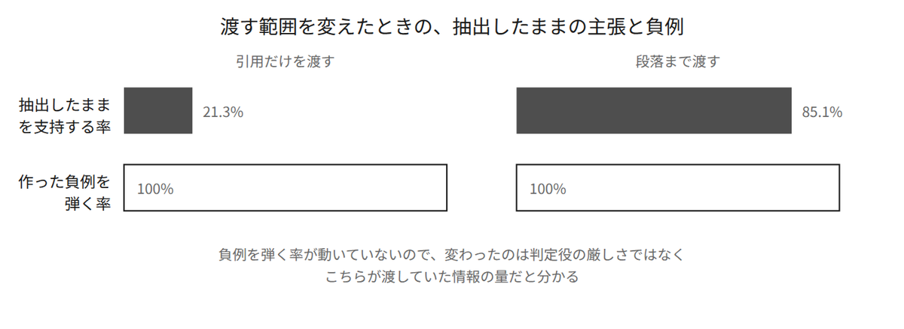
図8 判定役に渡す範囲を変えたときの、抽出したままの主張と負例
3,741件を547秒で採点しました。負例340件と、抽出したままの主張3,401件です。
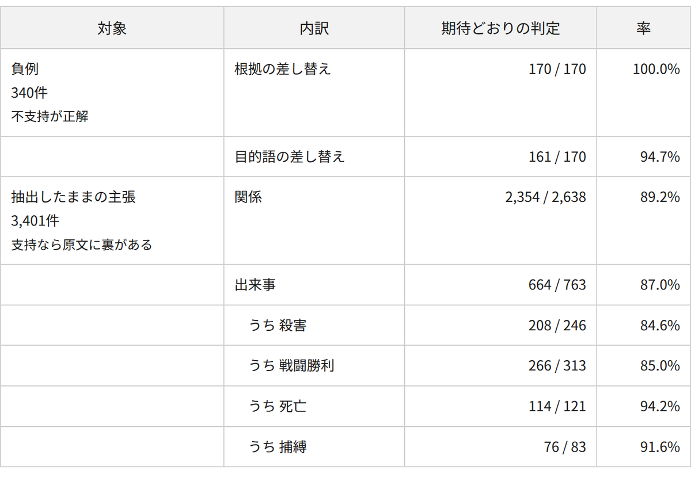
負例を通してしまった率は 9/340 で、2.6%です。すり抜けた9件は、全部が同じ形でした。
鄧九公 -[東門に駐軍する]-> 雷開（本来の相手を別人に差し替えたもの）判定理由: 「三山關鄧九公人馬駐劄東門」とあり、鄧九公の人馬が東門に駐軍している。
主語と述語が段落に見つかると、判定役は目的語が差し替わっていることを見落とします。根拠の原文そのものを差し替えたほうは170件すべて弾いたので、引用の偽装には強く、相手の差し替えに弱い、という偏りがあります。
詩から取れた関係は、地の文から取れた関係より8ポイント低い支持率になりました（89.3%に対して80.9%）。詩は筋の要約や講釈なので、そこから関係として取り出すと、原文の裏が取りにくくなります。
一方で、「回全体では正しいが、その段落には書かれていない」という不支持もあります。段落を単位にして測っているので、ここで出る数字は精度の下限になります。
ここまでの数字には、大きな穴が2つあります。判定役が抽出と同じモデルなので、自分の答案を自分で採点しています。そして正解データが名簿219人だけで、関係についての正解が1件もありません。この穴を、抽出にも判定にも使っていない別のモデルに問題を作らせることで埋めます。
「封神演義を題材にして困ったこと」に書いたとおり、この作品には版がいくつもあります。日本語で手に入る情報は、翻案に汚染されています。素朴に問題を作らせると、原文から正しく抽出したものが不正解にされます。
そこで、抽出にも判定にも使っていない ChatGPT と Claude に、翻案でしか成り立たない設定を「答えてはいけない問題」として集めてもらうことにしました。筆者の作った仕組みがその問題に答えてしまったら、それは原文ではなく、モデルが元から知っていることから出てきた証拠になります。
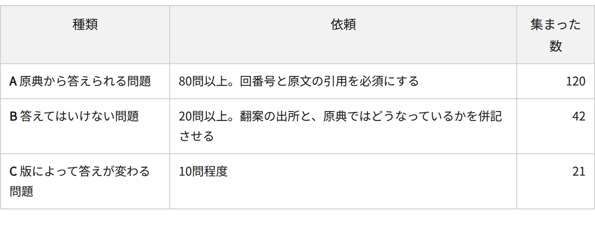
Bは、次のような問題になりました。翻案が足したものは、大きく3種類に分かれます。
1つめは、読みです。日本語の読み仮名は日本語版が付けたもので、原文には1文字もありません。この記事で括弧に入れている読みも、答えてはいけない側に属します。
2つめは、人物の設定です。親子関係や正体が、翻案で足されています。
3つめは、結末です。誰が神に封じられたかが、版によって違います。
どれも、答えの形が「第何回か」になっています。原文に無いものを答えさせると回番号が出てこないので、答えたかどうかが機械で分かります。
ただし、こちらで機械的に確かめたのは「答えにあたる語が原文に1件も無い」ところだけです。出所の欄は、問題を作らせた側が書いてきた記述をそのまま載せています。どの翻案が言い出したのかまでは、筆者は確かめていません。
Cを集めたのは、採点から外すためです。日本語版 Wikipedia に「木版本では封神されて東斗星官となっているが、清末以降の排印本では封神されていない」という記述があります。版によって正解が変わる箇所があるので、この21問は採点対象から外しました。
返ってきた問題には、根拠として原文の引用が付いています。その引用が原文の部分文字列かどうかを、機械で照合しました。
ChatGPT の A 91問: 引用あり 79 指定の回に一致 61（＋末尾の句読点だけ違う 6）Claude の A 29問: 引用あり 29 指定の回に一致 21
Claude の出力には「取得ツールがファイルの先頭しか読めなかった」という注記が付いていて、実際に別の版のテキストを引いていました。注記が無いまま引用だけが合っていない場合より、原因の切り分けが早く済みます。
Bのほうは、42問すべてが使えました。翻案の出所と原典での記述が揃っていて、回番号が空で、答えにあたる語が原文に1件も存在しません。
この照合で、筆者の側の間違いが2つ出ました。1つは、名寄せで使った字体の対応表が片方向だったことです。もう1つは、照合を完全一致だけでやっていたために、…之職。 と …之職， の違いで6問を落としていたことでした。末尾の句読点を落としてから照合するようにしました。
同じ問題を、2つの条件で解かせます。
グラフからの引き方は、問題文に出てくる表記で人物を引き、その人物と関係、受け継がれる称号を行にして渡します。正解側に付いている回番号は見ません。答えのある場所を漏らさないためです。
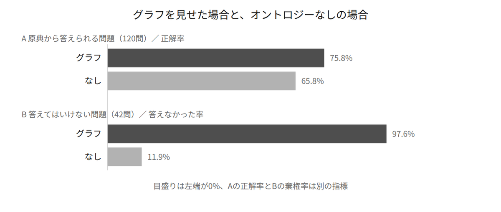
図9 グラフを見せた場合と、オントロジーなしの場合
「封神演義を題材にして困ったこと」の1つめに挙げた「モデルがすでに知っている」が、そのまま数字になりました。何も見せなくても、モデルは120問中79問に正解します。そしてBでは、翻案由来の設定を37/42で答えてしまいます。
Aでの差は10ポイントしかありませんが、グラフのほうは、答えが引けないときに「分からない」と答えます。答えた問題だけで見ると、グラフが 91/104（87.5%）、オントロジーなしが 79/115（68.7%）になります。オントロジーなしのほうは当てにいくので、当たりも外れも増えます（不正解が26問）。
問題の型で分けると、どちらが当てるかが分かれます。
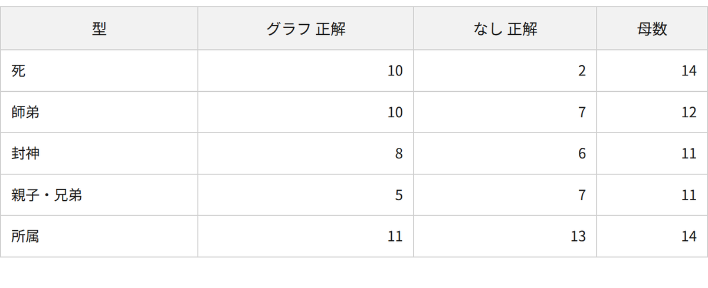
グラフが正解するのは、原文の1箇所に書いてある事実です。誰が誰を殺したかは、その場面にそう書いてあります。グラフが不正解になるのは、1文に収まらない関係です。「伯禽の父は誰か」という問題では、原文が 乃封其長子伯禽於曲阜 としか書いておらず、周公旦との父子関係は別の文にあります。文をまたぐ関係を、筆者はまだ取れていません。
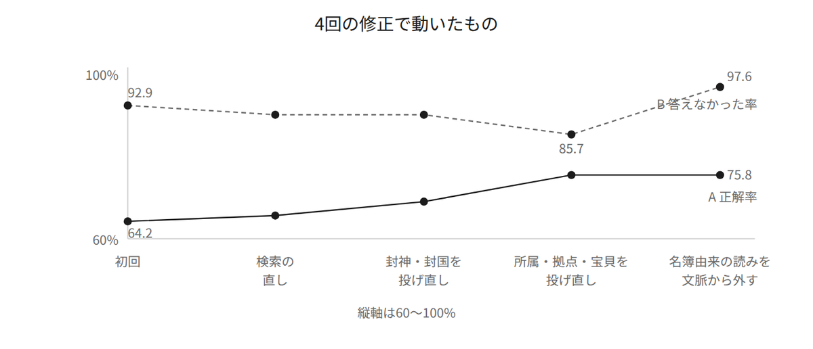
図10 4回の修正で動いた正解率
答えられなかった43問を、どの工程で答えにたどり着けなかったかで分類しました。抽出の取りこぼしは9件しかなく、22件は「抽出にあるのに渡していない」でした。
1つめの修正は、渡す行の選び方です。「哪吒の師は誰か」に対して、渡した61行に 李哪吒 → 太乙真人 師事する が入っていませんでした。順位付けの条件に出現回数が入っていたため、1回しか出てこない 師事する が枠から押し出されていたのです。問題文に出てくる漢字と、関係に付いた述語の重なりで順位を付けるようにしました。
2つめと3つめの修正は、抽出のやり直しです。第九十九回と第一百回は 特敕封爾為X之職 封Y於Z という決まった形の列挙で、地の文から関係を拾う一次抽出には向いていません。この2回だけ専用に抽出し直しました。次に答えられなかった15問を、ノードがあるかどうか・辺があるかどうかまで見たところ、はっきり分かれました。
[所属] 聞仲は自ら何教の門人だと述べるか 正解 截教 ノードあり・辺なし[宝貝] 火靈聖母が使う剣は何か 正解 太阿劍 ノードあり・辺なし[場所] 四聖がいた島はどこか 正解 九龍島 ノードあり・辺なし-----------------------------------------------------------------[場所] 聞仲が歸天する回の題名の場所 正解 絕龍嶺 辺あり（渡していない）
8件から11件が、「概念は取れているのに、人物との関係が取れていない」という形でした。太阿劍 というノードはあるのに、火靈聖母 → 太阿劍 という辺がありません。一次抽出は述語を自由記述にしたので、所属・拠点・宝貝にあたる関係は述語が分かれてしまい、拾い切れていませんでした。この3つだけ型を閉じて抽出し直しました。
プロンプトに 「自己紹介の文を特に丁寧に拾え」 の一文を足したところ、所属と拠点の関係が2,511件増えました。
ch071 [拠点] 火靈聖母 → 丘鳴山 吾乃是丘鳴山火靈聖母是也。ch012 [拠点] 太乙真人 → 乾元山金光洞 貧道乃乾元山金光洞太乙真人是也。
章回小説では、人物が登場するときに自分で名乗ります。そのとき、所属と拠点をまとめて言います。この名乗りの文から、所属と拠点の関係をまとめて取れました。2,511件が追加され、Aの正解率は69.2%から75.8%に上がりました。
4つめの修正は、渡す行から読み仮名と、名簿由来の所属を外すことです。ここまでで、Bの正解率が92.9%から85.7%へ下がっています。渡す行が増えた分、モデルが答えてしまう余地も増えました。失敗した6問を見ると、4問が同じ原因です。
B-001 哪吒の読みは「ナタク」か → グラフ「いいえ。行には『り なた』とある」B-003 聞仲の読みは「モンチュウ」か → グラフ「いいえ。読みは『ぶん ちゅう』」
読み仮名で答えていました。読み仮名は display_ja として別の層に持たせたもので、ja.wikipedia 由来・原文には無いものです。「原文だけで答えられるか」を測るなら、文脈に入れてはいけませんでした。読み仮名と、同じく名簿由来の所属を外して測り直したところ、Aは1問も落ちず、Bが85.7%から97.6%になりました。読み仮名はAの役に立っていません。問題が漢字で聞いてくるので、当然です。
最初は採点も文字列の一致だけでやっていて、Aのグラフ条件は58.3%でした。不正解にしていたものを見ます。
正解「退走した」 答え「麒麟を西へ向けて逃げた。」正解「周」 答え「周陣営」 ← 1文字の正解を弾いていた
答えが入っている243件を全部モデルに採り直させたところ、58件（24%）で食い違いました。取りこぼしが40件、甘すぎたものが3件です。Aのグラフ条件は58.3%から64.2%になりました。
これで3回目になります。判定役に引用だけを渡して21.3%、字体の対応表を片方向だけにして36.1%、採点を文字列一致だけにして58.3%。3回とも、実際より低い数字が出る向きに間違えました。そのまま記事にしていれば、筆者は自分の作ったものの実力を低く報告していたことになります。厳しく測れば正しく測れる、ということはありません。
14 渡したのに答えず（読み取りの失敗）7 渡していない（検索の失敗）6 抽出に無い（取りこぼし）2 問題側
抽出の取りこぼしは9件から6件に減り、いちばん大きな穴が「渡した行から読み取れない」に入れ替わりました。
渡した行 9,401（1問あたり平均 58行） そのうち引用された行 202（2.1%）
渡しすぎています。1行が長く、同じ関係が何度も出てきます。ここから先は抽出の問題ではなく、行の書き方と渡す量の問題になります。
先に挙げた3つ、つまり「どの呼び名でも引けること」「称号が誰を指すか回つきで分かること」「読んだ回までしか見せないこと」は、どれも作れました。出来上がった画面が図11です。
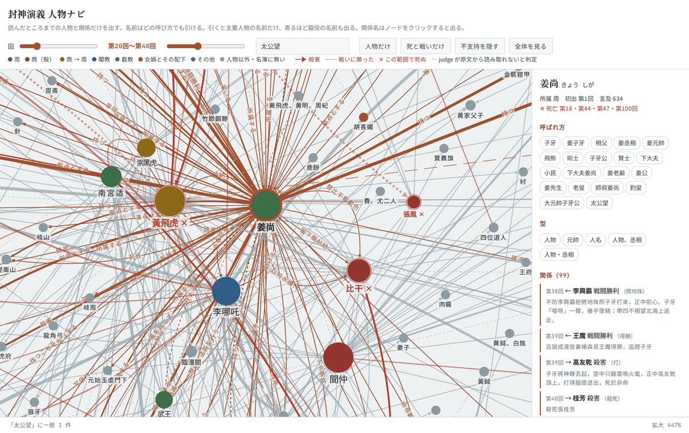
図11 第20回〜第40回に絞り、「太公望」で引いた状態
検索欄に入れたのは「太公望」です。原文に1回しか出てこない表記ですが、名簿由来の別名として登録してあるので、姜尚に当たります。
画面の右のパネルに、選んだ人物について取れているものが全部出ます。呼ばれ方が22通り、死亡した回が4つ、関係が99件です。関係には根拠になった原文が付いていて、それがどの回のものかも出ます。読んでいて「この人は誰だったか」となったときに引くための画面なので、根拠の原文が読めることを優先しました。
すべての概念と関係が回番号を持っているので、範囲で絞る処理には追加の作りこみが要りません。「第N回まで読んだ」という指定は、下限を1にしただけの特別な場合になります。
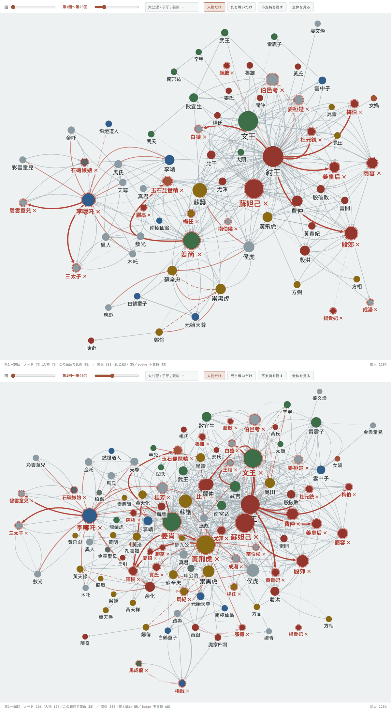
図12 第20回まで読んだ状態（上）と、第40回まで読んだ状態（下）
どちらも「人物だけ」を押して、人物以外のノードを外しています。スライダーで範囲を広げると、人物と関係の数はこう増えます。
第1〜 20回 人物 70 関係 288 この範囲で死ぬ 21第1〜 40回 人物 106 関係 535 この範囲で死ぬ 38第1〜100回 人物 225 関係 1,507 この範囲で死ぬ 139
画面の上で見える違いを3つ挙げます。
1つめは、まだ出ていない人物が出ないことです。楊戩 は初出が第四十回なので、第20回まで読んだ状態（図12の上）には居ません。第40回まで読んだ状態（図12の下）の左下に出てきます。同じことが 黃天化（第三十一回）や 馬成龍（第四十回）でも起きます。読んだ先の人物が画面に出てこないので、名前で先を知ってしまうことがありません。
2つめは、死の ✕ が範囲に連動することです。黃飛虎 はどちらの図にも居ますが、✕ が付くのは下の図だけです。第三十一回に 飛彪將飛虎救回時，已是死了 とあるからで、第20回まで読んだ状態では、この人物はまだ生きています。
3つめは、辺の数の順位が入れ替わることです。読み進めるほど主人公が前に出ます。
第1〜 20回 紂王(98) 文王(38) 蘇妲己(36) 姜尚(31) 蘇護(23) 李哪吒(21)第1〜 40回 紂王(128) 姜尚(72) 文王(69) 黃飛虎(61) 蘇妲己(48) 李哪吒(29)第1〜100回 姜尚(222) 紂王(192) 黃飛虎(109) 李哪吒(102) 文王(71) 楊戩(71)
第20回までは紂王が1番手で、姜尚は4番手です。第40回までで姜尚が2番手に上がり、全100回では1番手になります。黃飛虎は第20回までの上位に居ませんが、第三十回で商に反旗を翻したあと4番手に入ります。
なお、下の図で 楊戩 に付いている ✕ は間違いです。第四十回の 方纔把花狐貂弄死了 から 楊戩 → 花狐貂 殺害 が取れているのですが、花狐貂 は楊戩が変化した姿なのですが、別名としてまとめてしまったので、自分で自分を殺したことになっています。
『封神演義』には、死んだあとで生き返る人物がいます。そのため、1人の人物に複数の死亡回を持たせたうえで、表示している回の範囲に入る死亡だけを印にする形にしました。
李哪吒 死亡した回 [13, 14, 93] 蘇妲己 死亡した回 [4, 97]紂王 死亡した回 [97, 98] 聞仲 死亡した回 [52, 53]
蘇妲己（そだっき）の第四回は、狐狸（こり）がもとの妲己を殺して成り代わる場面です。妲己魂魄已被狐狸吸去，死之久矣 を根拠に取れています。入れ替わりの場面を、狐狸による殺害として取れています。
姜尚は4回死にます。どれも原文にそう書いてあります。
ch018 [死亡] 下大夫姜尚投水而死。 ← 朝歌を逃れるための狂言ch044 [殺害] 姚天君把子牙二魂六魄俱已拜去了 ← このあと生き返るch047 [殺害] 且說子牙被趙公明一鞭打死 ← このあと生き返るch100 [死亡] 後子牙薨 ← 天寿
第十八回は死んだふりです。本文がそう書いている以上、抽出としては正しく、「本文にそう書いてあるか」と「実際に死んだか」が食い違う例になります。
候補は5つありました。第三十八回にも 王魔 が子牙を打ち殺す場面があるのですが、抽出が返した根拠が 王魔復取開天珠… と始まっていて、原文は 王魔見趕不上子牙，復取開天珠… です。主語を前へ詰めた引用になっているため、原文の部分文字列かどうかの照合が通らず、死亡回が4つに減りました。原文との文字列照合で、この1件は除かれています。
描き分けは、殺害が赤い矢印と相手への ✕、戦闘勝利が赤い線だけで矢印も ✕ も無し、死亡が ✕ だけ、捕縛が橙の破線です。第一回に 殷紂 → 妻（殷紂は紂王のことです）のような、相手が人物ですらない線が出ていたので調べたところ、どれも冒頭の詩から取れたものでした。詩から取れた死と戦いは既定で入れないことにして、35件を除きました。
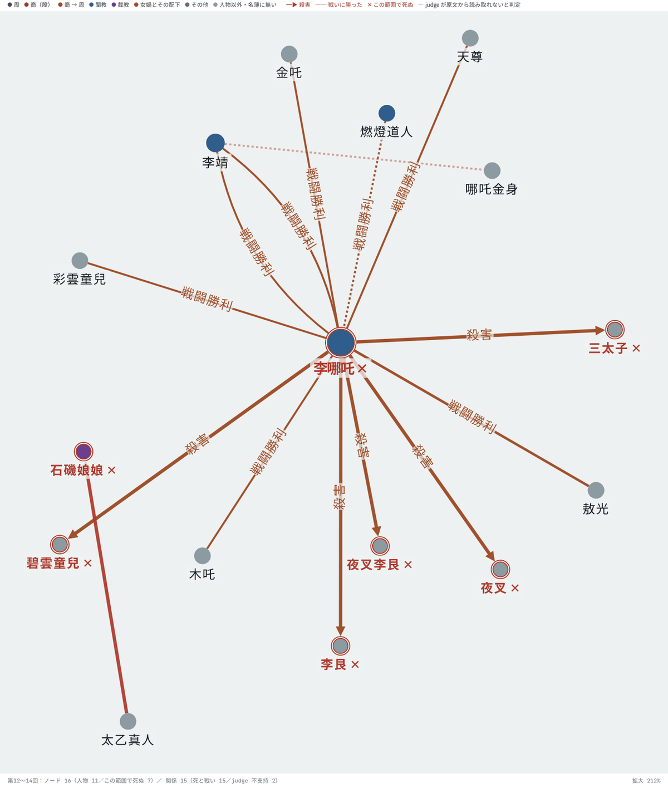
図13 第12回〜第14回に絞り、「死と戦いだけ」で李哪吒を選んだ状態
この3回だけで、描き分けが4種類とも出ます。
三太子 夜叉 夜叉李艮 李艮 碧雲童兒 へ5本のびていて、矢印の先には全部 ✕ が付いています李靖 木吒 金吒 天尊 敖光 との間にのびています。相手は死んでいないので ✕ が付きません燃燈道人 → 李哪吒 戦闘勝利 がこれで、消さずに残してあります土行孫 → 李哪吒 捕縛 が出てきます選んでいる李哪吒自身にも ✕ が付いています。第十三回と第十四回で死ぬからです。殺した相手と、自分が死んだ回が、同じ画面に出ます。
判定役が不支持と判定した辺は、画面から消さずに点線にしました。不支持になった辺を消してしまうと、抽出に間違いがあったことが画面から分からなくなります。「不支持を隠す」ボタンで切り替えられるようにしてあります。
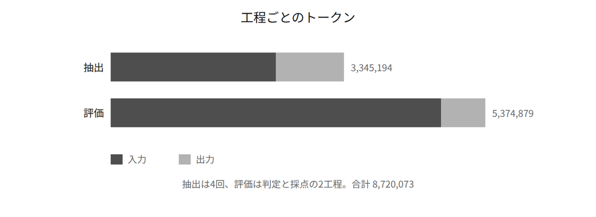
図14 工程ごとのトークン
抽出では原文を1度読むだけですが、判定では関係1件ごとに段落を読み直し、採点では問題1件ごとに平均58行を読み直します。同じ原文を何度も読み直す工程では、読み直した回数だけ入力が積み上がります。
実際、全体では入力が出力の4.4倍あります。読み直しの回数だけでは、この比率は説明できません。抽出の100リクエストを、渡した原文の長さで4つに分け、短いほうの25回と長いほうの25回を比べます。
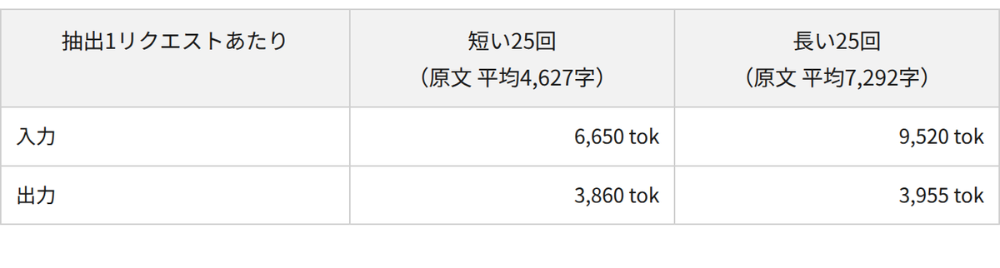
原文が1.58倍長い側では、入力が1.43倍に増えているのに、出力は1.02倍しか増えていません。プロンプトもモデルも同じ条件で回しているので、差を作っているのは読ませた長さだけです。1リクエストで書かせる JSON の量は、読ませる長さに比例しません。入力と出力のどちらが多くなるかは、読ませる単位の大きさで決まります。細かく切って渡せば入力は減りますが、出力はほとんど減りません。
今回はオントロジーの入門を終えたところで、実践として『封神演義』の人物関係を題材にオントロジーを作ってみました。
そもそも私はオントロジーを触り始めたばかりですし、『封神演義』についても詳しいわけではありません。そのため、「これが本当に正解なのか？」と自分では判断できない部分も多く、かなり試行錯誤しながらの作業になりました。
せっかく人物関係図まで作ったので、今度はこれを片手に、日本語訳の『封神演義』を最後まで読んでみようと思います。
今回特に難しいと感じたのが、同じ人物でも場面によって呼び方が変わったり、文章中で主語が省略されたりすることです。これは日本語訳だけの問題ではなく、中国語の原文でも起こります。おそらく程度の差こそあれ、ほかの言語や文書でも似た問題はあるでしょう。
そう考えると、文章を一発で簡単にオントロジーへ変換する、というのはなかなか難しそうです。実際にやってみると、オントロジーは思っていた以上に一筋縄ではいかないものだと感じました。
一方で、オントロジーにしておくことで、複雑な人物関係や「何話で誰が何をしたのか」といった情報を、関係性を保ったまま効率よく残せるのは大きな魅力です。普通に文章を読んでメモするのとは、また違った面白さがありました。
まだまだ試行錯誤は必要そうですが、題材を変えればまったく違った難しさや発見もありそうです。
興味を持った方は、ぜひ自分の好きな作品や、仕事・趣味で持っているデータセットを使って、オントロジー作りを試してみてください。